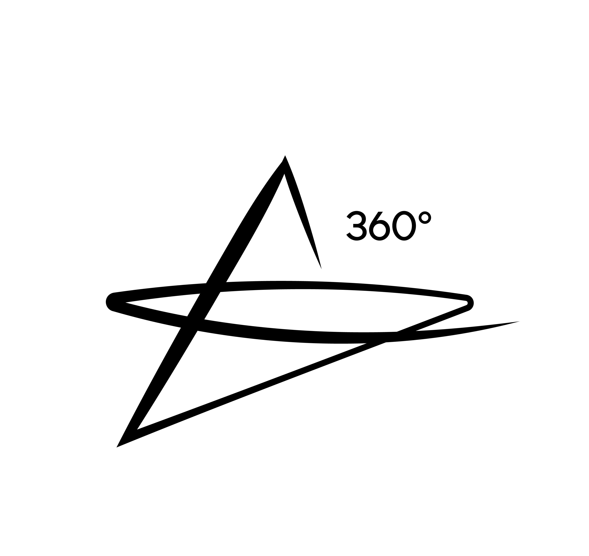
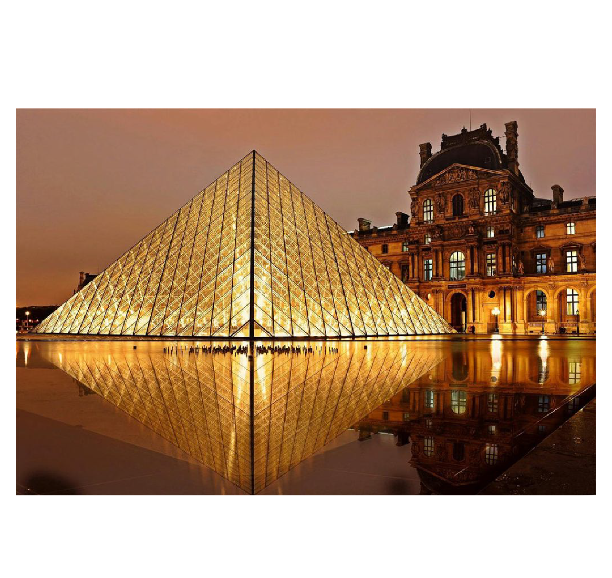
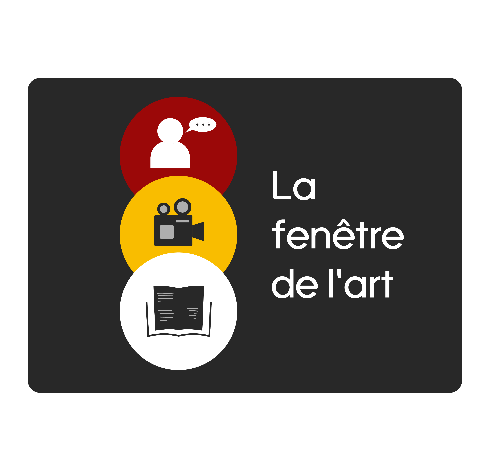
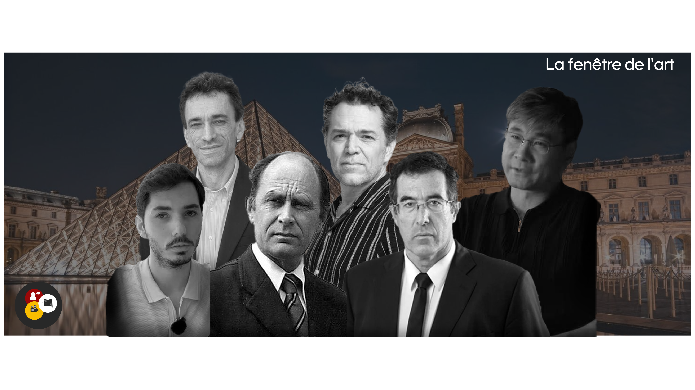
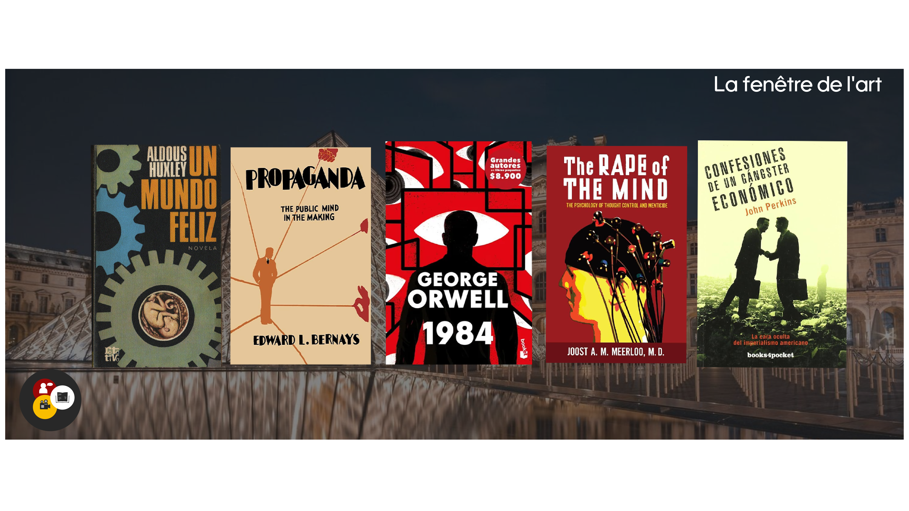
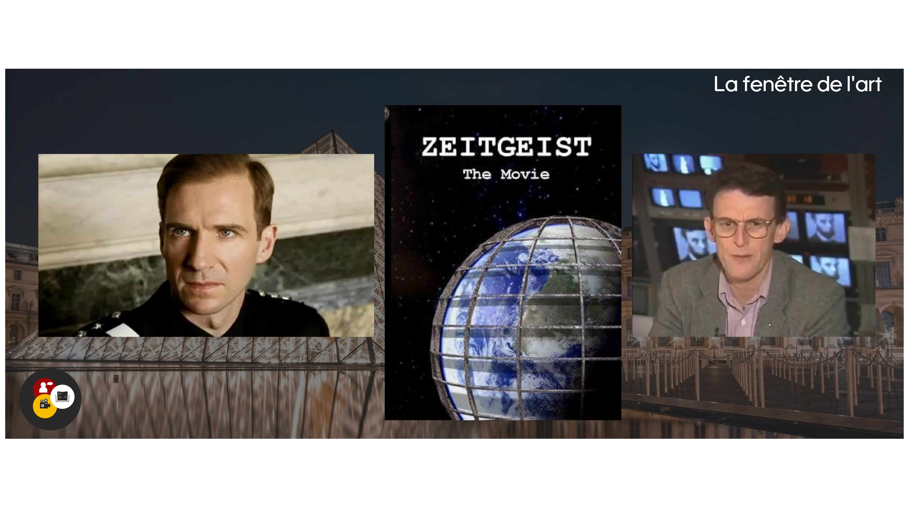

Museo de Louvre
El Museo de Louvre, situado en el corazón de París a orillas del Río Sena, es el museoo de arte más grande, famoso y visitado del mundo. Su origen se remota al siglo XII, cuando comenzó como una fortaleza medieval destinada a proteger a la ciudad, para convertirse en el majestuoso palacio real de la dinastía francesa.No fue sino hasta en 1793, en plena Revolución Francesa, cuando abrió sus puertas al público como un museo nacional.
Entre las miles de maravillas universales que alberga, el museo destaca por custodiar algunas de las piezas más influyentes en la historia de la humanidad. Sobresalen la icónica Mona Lisa de Leonardo da Vinci, la escultura helenística de la Venus de Milo, la imponente Victoria Alada de Samotracia, la emblemática pintura La Libertad guiando al pueblo de Eugène Delacroix y el milenario Código de Hammurabi.


Da una vuelta 360 para mejor experiencia visual y asi conocer todo el entorno.
Así se ve el Museo de Louvre una tarde tranquila y linda.
Festival
Te invitamos a ser parte de una experiencia cultural integral diseñada para conectar las ideas, la literatura y el lenguaje visual. Nuestro festival se convierte en un punto de encuentro donde destacados ponentes compartirán sus perspectivas e investigaciones sobre temas de actualidad, abriendo un espacio imprescindible para el diálogo y la reflexión. Además, contaremos con una cuidada selección de presentaciones de libros, permitiendo al público descubrir nuevas obras, interactuar con autores y profundizar en la riqueza de las letras.
Para complementar esta oferta reflexiva y editorial, el evento integrará una muestra audiovisual que explorará la fuerza de la imagen en movimiento y la narrativa digital. A través de la proyección de contenidos creativos y piezas documentales, la jornada ofrecerá una mirada envolvente donde la palabra hablada, la escritura y el arte visual se entrelazan. Ven a disfrutar de un entorno multidisciplinario pensado para inspirar, aprender y celebrar la cultura en todas sus expresiones. Te esperamos este Sabado a las 7:40 de la noche

Ponentes
El festival reunirá a seis destacados historiadores, pensadores e investigadores internacionales que cuestionan las narrativas oficiales para analizar la geopolítica, el poder global y la identidad cultural desde perspectivas críticas. En el ámbito de las estructuras de poder y las finanzas continentales, el investigador español Jorge Guerra explorará las redes de elite y el poder oculto a través de su obra sobre la Nobleza Negra, mientras que la memoria histórica del historiador británico Antony Sutton revelará cómo la alta finanza y las transferencias tecnológicas internacionales influyeron decisivamente en el surgimiento del modelo soviético.
Por su parte, el pensamiento hispanoamericano y el desarrollo de los Estados serán abordados por la perspectiva analítica del sociólogo argentino Marcelo Gullo, quien postula la necesidad de una insubordinación ideológica para romper la dependencia colonial, a la par del historiador mexicano Juan Miguel Zunzunegui, cuyo trabajo desmonta los mitos históricos para superar los traumas colectivos y construir una identidad crítica e integrada en la geopolítica mundial.
Finalmente, la revisión histórica y las dinámicas estratégicas se completan con Guillermo Mas Arellano, analista que reivindica la Hispanidad, combate la Leyenda Negra y examina la raíz tradicional y filosófica de la cultura española, junto al profesor Jiang Xueqin, quien aplica la Teoría de Juegos y el legalismo clásico para descifrar el futuro de las potencias mundiales, la inteligencia artificial y el colapso de la globalización armónica.

Libros
El programa editorial del festival reúne cinco obras fundamentales que desvelan las dinámicas del control social, la manipulación del pensamiento y la arquitectura del poder global. En el ámbito de las distopías literarias y la psicología colectiva, la narrativa se abre con 1984 de George Orwell, advertencia sobre el totalitarismo, la censura sistemática y la anulación del pensamiento crítico mediante el uso de la neolengua y la reescritura de la historia. A esta visión se suma Un mundo feliz de Aldous Huxley, que examina el sometimiento social no mediante la fuerza, sino a través del hiperconsumo, la ingeniería genética y la anestesia emocional; mientras que el tratado clínico The Rape of the Mind de Joost Meerloo profundiza en el "menticidio", detallando cómo el miedo sostenido, la saturación informativa y los reflejos condicionados pueden quebrar la autonomía mental en las sociedades modernas.
Por otra parte, la sección de ensayo geopolítico y persuasión pública expone los mecanismos reales que operan tras el orden internacional y la opinión de masas. Confesiones de un sicario económico de John Perkins aporta un testimonio directo sobre el neocolonialismo financiero, revelando cómo la manipulación de deudas, la presión corporativa y las intervenciones encubiertas han sido utilizadas para subordinar los recursos de naciones en desarrollo. Finalmente, Propaganda de Edward Bernays alinea el psicoanálisis freudiano con la psicología de masas para explicar cómo la persuasión afectiva y la manipulación consciente de los deseos inconscientes se convirtieron en el motor invisible de las democracias de consumo modernas.

Audiovisual
La muestra audiovisual del festival reúne tres producciones cinematográficas y documentales que exploran la alegoría política, la desmitificación institucional y la arquitectura del sistema financiero global. La selección abre con Land of the Blind (2006), una sátira política oscura escrita y dirigida por Robert Edwards y protagonizada por Ralph Fiennes y Donald Sutherland; inspirada en la experiencia del director en inteligencia militar y en los ciclos históricos de revoluciones fallidas, la cinta aborda la paradoja del poder cuando un nuevo régimen revolucionario termina replicando la misma brutalidad y fanatismo del despotismo caído.
Por otro lado, la Muestra Documental examina los fenómenos de comunicación de masas y la economía monetaria a través de dos piezas emblemáticas. Zeitgeist, obra independiente creada por Peter Joseph que se convirtió en el fenómeno viral insignia de la contracultura digital de los años 2000, cuestiona las estructuras de control social mediante tres ejes polémicos: los orígenes mitológicos de las religiones, los acontecimientos del 11 de septiembre y la emisión de deuda por la Reserva Federal. Finalmente, The Money Masters, dirigida por Bill Still y Patrick S. J. Carmack, ofrece un minucioso análisis de más de tres horas sobre la historia del dinero fiduciario, la banca de reserva fraccionaria y el monopolio de los bancos centrales, invitando al espectador a reflexionar sobre la soberanía económica y el origen de las crisis financieras contemporáneas.

«El arte no es un espejo para reflejar la realidad, sino un martillo para darle forma.» — Bertolt Brecht